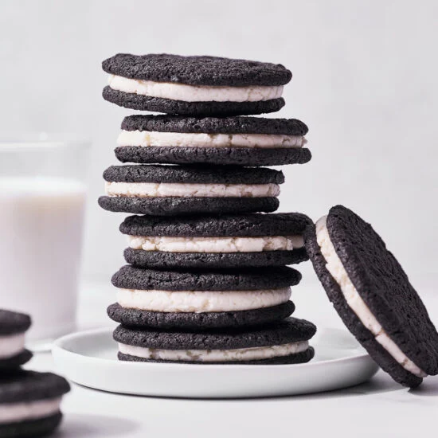

OREO RECIPE

Description
Make your own version of the classic cookie with this recipe. The chocolate cookie is sandwiched with a creamy filling for a delicious treat.
Serving: 40
(28.8g per Oreo - number of servings equivalent to one tray bake.)
Cooking time: 45 minutes
You'll Need the following Ingredients:
- 1 cup unsalted butter(225 g),
- 1 cup white sugar(200 g)
- 2 teaspoons salt
- 2 large eggs
- 2 cups all-purpose flour(250 g)
- 1 ¼ cups dark cocoa powder(150 g)
- ½ teaspoon baking soda
Oreo Recipe in Easy Steps
- In a large bowl, cream together 1 cup (225 grams) of softened butter with the white sugar and salt, until light and fluffy
- Beat in eggs until fully incorporated
- Sieve together the flour, cocoa powder, and baking soda into the mix. Blend well
- Add the dry ingredients to the wet ingredients, and mix together until combined
- Turn the dough out onto your surface and push together into a flat square. Wrap the dough in plastic wrap and refrigerate for 1 hour
- Preheat oven to 325˚F (160˚C)
- Remove the dough from the fridge, and for ease of rolling out, divide the dough into 4 (this way the dough stays cool longer and prevents the need of re-chilling later on)
- To roll out the dough, place a quarter of the dough between two sheets of parchment paper (alternatively the dough can be rolled out on a lightly floured surface - though the parchment is preferred as it prevents any additional flour from altering the color/appearance of the dark cookies). Roll the dough between the two sheets of parchment to ¼-inch (½ cm) thickness
- Using a small round cookie cutter (alternatively, we found the rim of a champagne glass to be a perfect size!) cut the dough into individual rounds and place on a large parchment-lined baking sheet, leaving at least ½-inch (1¼ cm) between each cookie
- Pack together and re-roll out any scraps to cut additional cookies. Repeat with this process with each remaining ¼ of the dough
- Bake in a preheated oven for 15 minutes. If baking multiple trays at the same time, be sure to rotate the pans in the oven halfway through. Remove and transfer cookies to a cooling rack to cool completely
- To make the filling, combine ½ cup (115 grams) butter, powdered sugar, and vanilla in a medium mixing bowl. Beat together until light and fluffy
- Assemble the cookies by spreading a generous scoop of the icing onto one of the cookies and sandwiching it with another. Give it a light squeeze and scrape any excess off to clear and even out the sides
- Serve with a glass of milk
Recipes Homepage